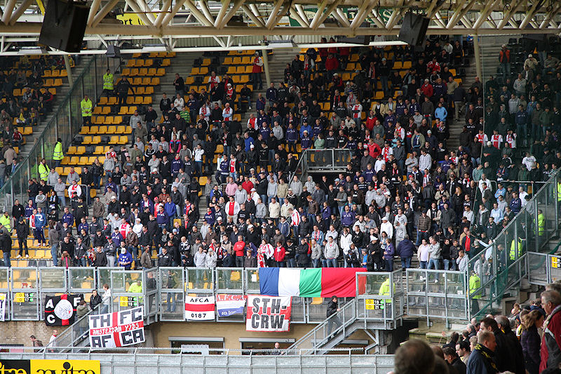

Het nieuwe bier wordt aangevoerd per paard.

Alweer geen vol vak.
Ajax is in de beginfase gevaarlijk. Hier schiet Sulejmani op de paal.
De Zeeuw kopt naast.
Hevige protesten na een ongelukkige handsbal van De Fauw die geel van
Braamhaar krijgt.
Suarez schiet de penalty linksboven binnen: 0-1, (24').
Na knap voorbereidend werk van Hadouir frommelt Sutchuin de bal in het doel:
1-1, (25').
Mooi getapt blondje.
De doorgebroken Janssen passt op Bodor die de bal achter Stekelenburg
schiet: 2-1, (54').
Suarez benut een vrije trap: 2-2, (76').
Wat Roda tegen RKC verzuimde, spelen met inzet, werd vanmiddag wèl goed
uitgevoerd.
In de spannende slotfase krijgt Emanuelson rood na een harde tackle van
achteren op Hadouir.

Vrije trap Roda.
In de 4 minuten extra speeltijd wordt het nog even gevaarlijk voor het doel
van Roda maar de wedstrijd eindigt in een 2-2 gelijkspel.
Kah en Suarez ruilen hun shirts.
Het was zeer druk in de Kickoff waar 500 liter bier gratis weggeschonken
werd.
Er waren gewoon weer Duitse liedjes in het PLS te horen, so fuck the matrix.
Danke - Bitte !!!
Goede samenvatting!

Blij met Brand.
Blij met Hadouir.
We zijn vandaag zo vrolijck, zo vrolijck....
De tapjuf wordt op handen gedragen.
Kelly&Koffieboer.